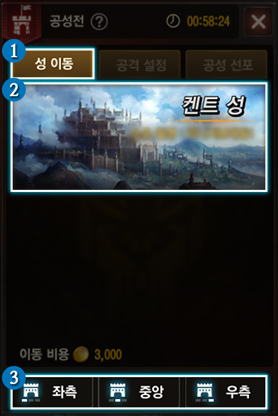
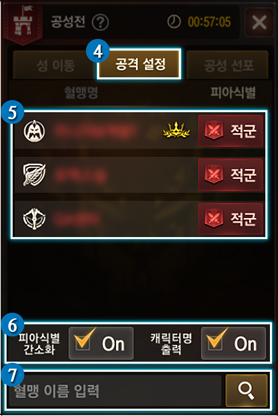
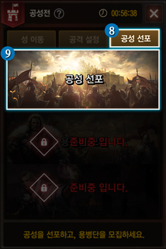
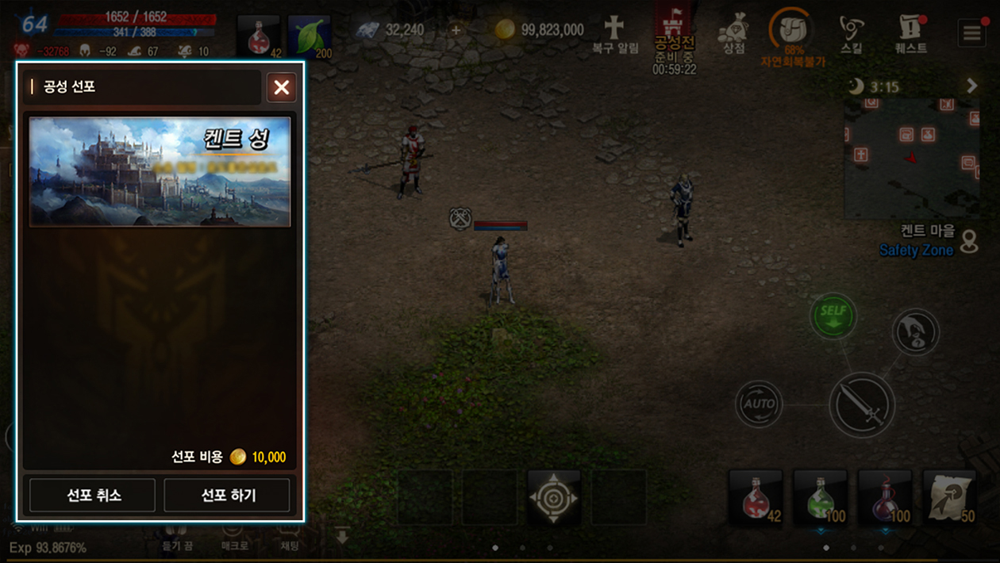
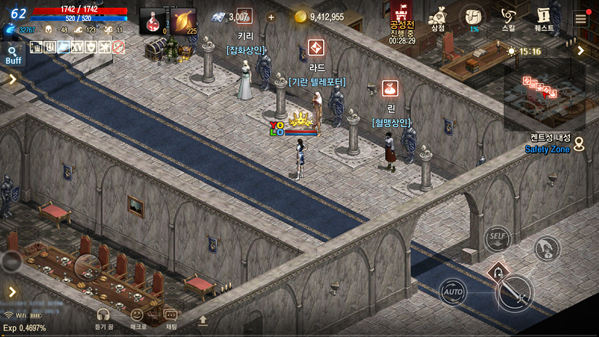

공성전 · 진행 안내
공성전 진행 방식
공성 선포부터 면류관 획득까지,
성을 차지하기 위한 전투의 흐름을 알아보세요.
01 · 전투 준비
공성전 인터페이스

성 이동
- 1목적지 선택
- 2선포·공성 현황
- 3유료 텔레포트: 좌측·중앙·우측

공격 설정
- 4피아식별 목록
- 5군주·수호기사의 관계 변경
- 6간소화: 아군·적군 마크
- 7혈맹 이름 검색·등록

공성 선포
- 8공성 현황
- 9군주의 성 선택·선포
02 · 전투의 시작
공성 선포

- 군주만 아데나를 지불해 종료 전까지 복수의 성에 선포 가능
- 선포 시 공성지역 혈맹원·용병 귀환
- 수성혈맹 외에는 인터페이스에서 취소 가능
03 · 성의 주인
공성전 승리 규칙

| 대상 | 승리 조건 |
|---|---|
| 수성 군주 | 30분 동안 면류관 유지 |
| 공성 군주 | 면류관 획득 후 20분 유지 |
| 공통 | 종료 시점에 면류관 보유 |
획득혈맹 외에는 강제귀환합니다. 면류관은 인벤토리에 없으며 군주의 왕관표식으로 표시됩니다.
04 · 또 하나의 전장
공성 던전
비참여 혈맹의 경험치·아이템 획득 던전
던전공성 던전일반 / 월드
| 항목 | 본 서버 | 인터 월드 |
|---|---|---|
| 던전 | 켄트 성 · 윈다우드 성 · 오크 요새 | 기란성 |
| 이용 시간 | 켄트 성 공성 후 1시간 | 기란 성 공성 후 1시간 |
| 입장 제한 | 공성 선포 혈맹 · 75레벨 미만 입장 불가 | |